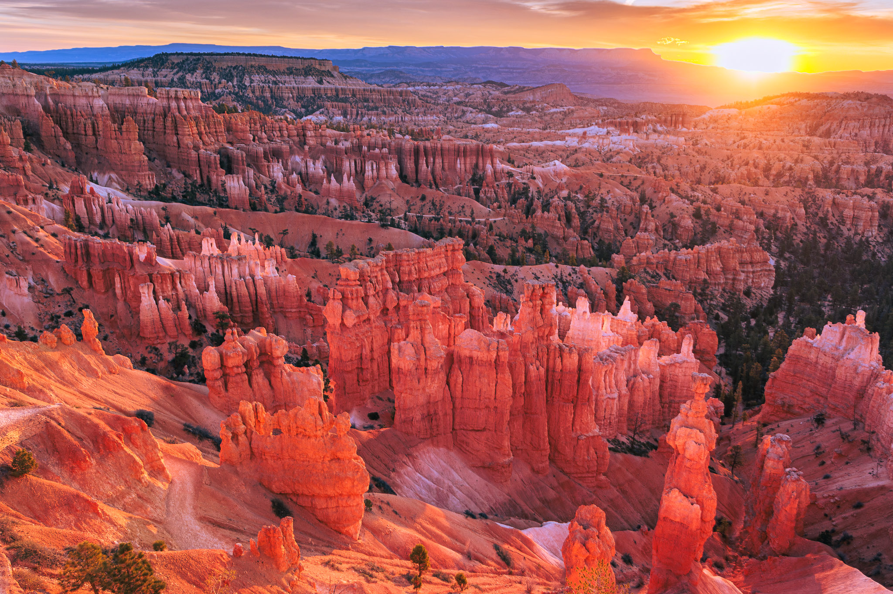

Mappe in rilievo
Per ogni viaggio disegno la mappa del percorso: fiumi e confini da Natural Earth, rilievo calcolato dal modello del terreno della NASA.
Guarda la mappa di Terra rossaFotografo per passione. Paesaggi, animali e strade, e la luce delle ore più belle.

Viaggi raccontati dall’inizio alla fine, capitolo per capitolo.

Arizona, Utah e Nevada, 5–11 aprile 2026. 73 fotografie in 9 capitoli.
Apri l’albumLe fotografie raccolte per soggetto, oltre i confini dei singoli viaggi.
Quello che succede intorno alle fotografie.
Per ogni viaggio disegno la mappa del percorso: fiumi e confini da Natural Earth, rilievo calcolato dal modello del terreno della NASA.
Guarda la mappa di Terra rossaLo scrivo e lo pubblico da solo, con qualche script in Python. Niente piattaforme e niente pubblicità: solo pagine leggere che mettono le foto al centro.
Il codice su GitHubPer una stampa, per usare una foto o anche solo per un saluto, scrivimi.